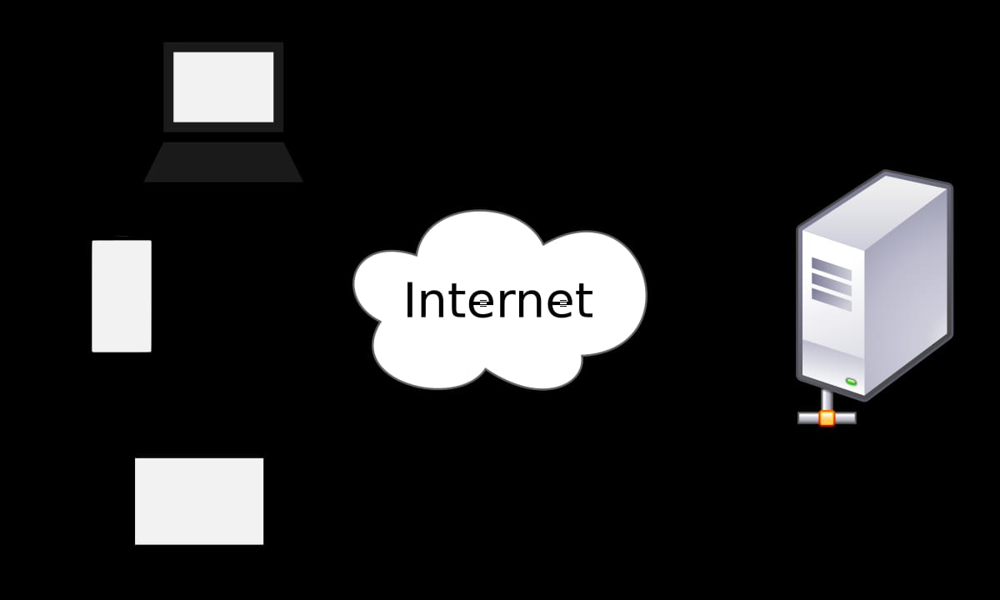

The Client-server model is a distributed application structure in computing that partitions tasks or workloads between the providers of a resource or service, called clients. Often client and servers communicate over a computer network, a server is a host that is running one or more server programs which share their resources with clients. A client requests a server'sncontest r service funtion.
